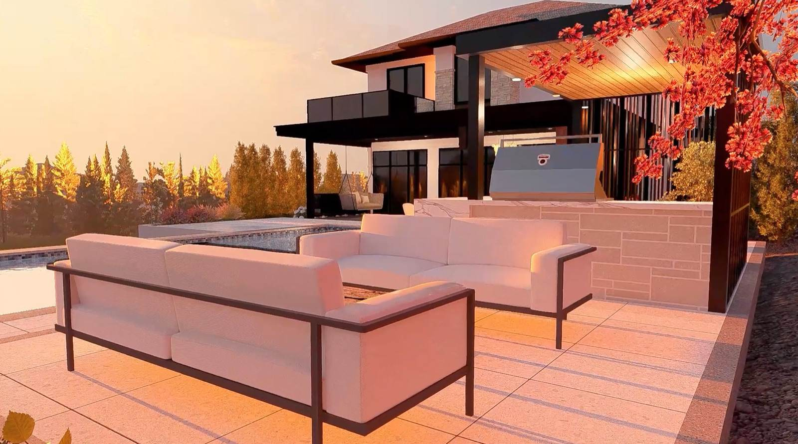

Call (250) 812 6112
Call (250) 812 6112
Call (250) 812 6112
Call (250) 812 6112

The grill is the easy part of your outdoor kitchen. The hard part is everything around it: where it sits, how far you carry the food, where everyone sits while you cook, and whether you can see what you are doing after dark. Get those wrong and you own an expensive counter that mostly holds a cover.
Get them right and you get the night you pictured when you started: dinner outside on a warm July evening, food straight off the grill, everyone at one table, and the lights coming on as the sun drops behind the hill.
Picture one real dinner, start to finish, and walk it through your yard. Three things decide whether your kitchen gets used every week or once a summer.
The walk from the back door. Every plate and every forgotten pair of tongs makes that trip. Too far from the house and you end up cooking inside. Too close and the smoke comes in the window.
Where everyone sits while you cook. The cook should face the table, the fire or the view, not the fence. If the cook has their back to everyone, the kitchen is in the wrong spot.
Where the sun and the light are at dinner time. A counter that bakes in full sun at six in the evening gets avoided in August. If you cook after dark, your lighting has to be planned in, not clipped on later.
Kitchens, firepits, patios and lighting usually get bought separately, and the yard ends up looking it. The dinner test flips that around: your meal decides where the kitchen goes, and the kitchen gets drawn into the rest of the space.
Be honest about how you cook. If the real answer is a grill and somewhere to put the plates down, your design should say that, not sell you extras you use twice a year. Then decide what has to run to it, like power for the lights. That gets drawn before the patio goes down, because digging up a finished patio is the expensive way to find out you forgot something.
Your kitchen sits on a patio, next to seating, near a fire or a pool, under the same lighting. Designed together, they share levels and materials and read as one space. You see all of it in 2D and 3D before anyone digs, with the build cost attached.
You are working with a design-build crew with twenty years in outdoor living. The crew that draws your kitchen builds it, so you are not project-managing three companies who blame each other. You also get called back the same working day. That matters, because what every homeowner says about getting a backyard built around here is four words long: never get a call back.
Your quote won't be the cheapest one you get. Planning the base, the levels and what runs under the patio is part of why. If you want the lowest number on the street or a quick one-off job, you are better off with someone else, and better to hear it now than three weeks in. If you want a kitchen you still use in year five, built by the people who drew it, that is the job.
Yes. The design consult is free, with no obligation, and you get a budget range from built-in kits in minutes rather than weeks. It is a budget, not a final quote.
See how the whole space comes together: outdoor living spaces in Vernon and the North Okanagan.